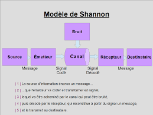

-
1936
Étude
L'Université du Michigan
Étudiant le génie électrique et les mathématiques à l'Université du Michigan, Shannon reçoit son diplôme à la fin de l'annnée.
-
Massachusetts Institute of Technology
Shannon utilise l'algèbre de Boole pour sa maîtrise soutenue au MIT. Il y explique la construction des machines à relais en utilisant l'algèbre pour décrire l'état des relais. Il fut par la suite, assistant au département de mathématiques jusqu'en 1940.
1938
Étude
-
1939 - 1940
Diplômes
SM/MIT
Il fut boursier Bolles avant d'obtenir le diplôme SM en génie électrique ainsi qu'un doctorat en mathématiques du MIT en 1940.
-
Institute for Advanced Study
Shannon a été associée à l'Institute for Advanced Study pendant un an grâce à une bourse nationale de recherche 1940-1941.
1940
L'Université de Princeton
-
1941
Murray Hill, New Jersey
Bell Telephone Laboratories
Shannon profite de cette année pour être mathématicien de recherche pour les Bell Telephone Laboratories à Murray Hill, dans le New Jersey.
Galerie
